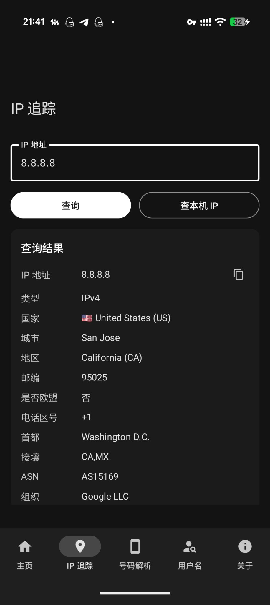
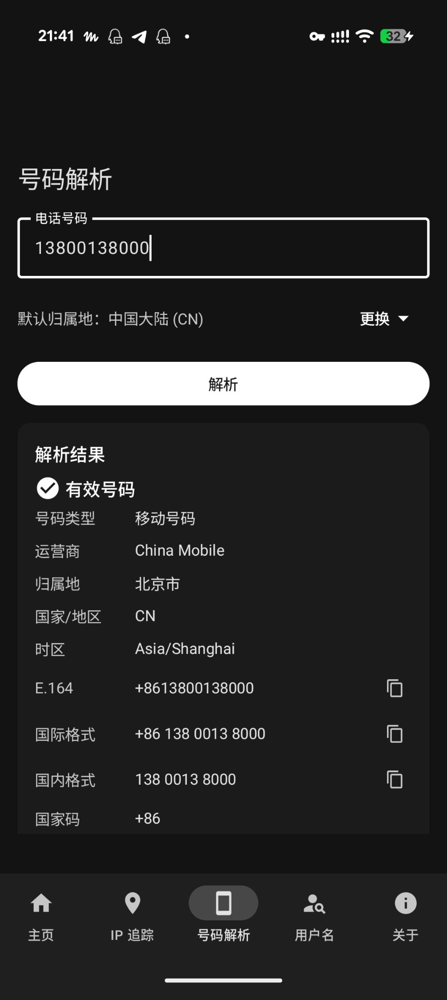
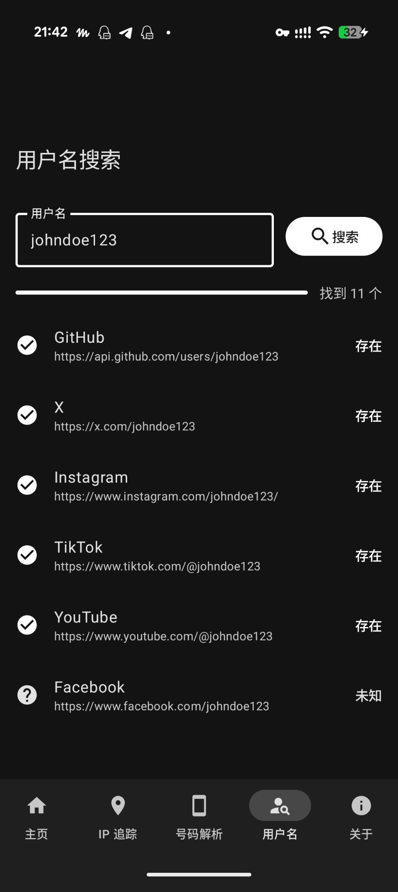

核心功能
- 通过 ipwho.is 查询 IP 归属、运营商、ASN 与时区
- 通过 ip-api.com 检查 IP 质量信号
- 通过 ipify 与 ipwho.is 查看出口 IP
- 使用 libphonenumber 离线解析号码
- 并发检查 15 个公开站点的用户名

了解公开 IP 信息、离线解析电话号码格式，或核对用户名是否出现在公开个人主页。
无账号、统计和广告。IP 查询会发送给列明的第三方；用户名检查会访问公开站点。号码解析完全离线，仅语言偏好保存在本机。
公开来源可能限流或反爬；用户名结果可能为“未知”，需人工确认。ipwho.is 免费额度为每 IP 每月 1 万次。仅限合法使用，禁止骚扰、盗号等行为。



請只從下方官方渠道安裝。